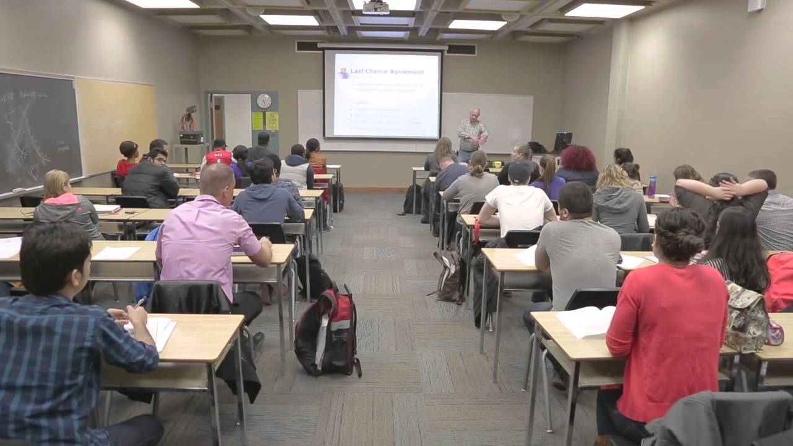
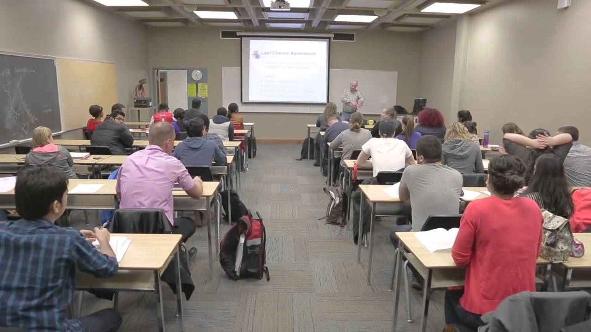

Lambton College has been servicing Canadian and international students for over 50 years and has truly evolved from a public not-for-profit college to a global post-secondary education provider. International students can study in Sarnia, Toronto and Mississauga, Ontario and Lambton College also has international students enrolled in campuses in China.Graduates of Lambton College have a competitive edge in employability and practical work experience. Many of the academic programs include co-op experience. International students are also eligible for a post graduate work permit upon the completion of their post-secondary program.

Welcome to Lambton College in Toronto.To promote a metropolitan experience to international students, Lambton College has licensed its culum to Cestar College to deliver its academic programs to international students in Toronto. For over 10 years, Lambton College has been a leader in establishing overseas and off-site licensing agreements for the delivery of its curriculum. International students can now take advantage of this opportunity to study in Toronto.Lambton College in Toronto offers quality education in a challenging yet student-friendly environment. Following the Lambton College curriculum, each semester is designed to meet the challenges unique to international students and create a quality academic experience. We offer small class sizes leading to effective teacher-student interaction,efficient class schedules and affordable tuition fees